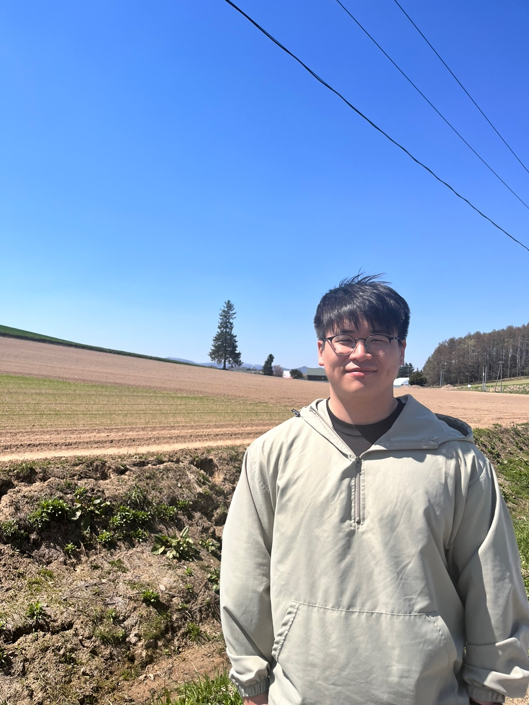

<div class="row flex-ms-reverse flex-row py-2">
    <div class="col-8" id="bio">
        <h1>Junwoon Lee</h1>
        <p style="text-align:left; font-size:1.5rem">
            Master student <br> The University of Tokyo
        </p>
        <p style="text-align:left; font-size:1.5rem">
             <em target="_blank" href="mailto: leejunwoon@robot.t.u-tokyo.ac.jp">leejunwoon@robot.t.u-tokyo.ac.jp</em>
        </p>
        <p class="text-justify"></p>
        </p>    

        <p style="text-align:left; font-size:1.5rem">
            <a target="_blank" href="images/cv.pdf">CV</a> &nbsp;/&nbsp;
            <a href="https://scholar.google.com/citations?user=g65vfS4AAAAJ&hl=en">Google Scholar</a> &nbsp;/&nbsp;
            <a href="https://www.linkedin.com/in/junwoon-lee/">LinkedIn </a>
        </p>
    </div>
    <div class="col-4" >
        
    </div>
    <div class="col">
        <p class="text-justify">
            <strong>Research interests:</strong> mobile robotics, SLAM, 3-D mapping, exploration, computer vision, field robotics
        </p>
        
        <p class="text-justify">
            I am a master student at <a target="_blank" href="https://www.u-tokyo.ac.jp/en/index.html">the University of the Tokyo</a>, supervised by <a target="_blank" href="https://www.robot.t.u-tokyo.ac.jp/~yamashita/">Prof. Atsushi Yamashita</a>, 
            working on research in LiDAR-visual-inertial / thermal-inerital SLAM and computer vision. 
            I am also co-supervised by <a target="_blank" href="https://www.robot.t.u-tokyo.ac.jp/anlab/index.php/en/self-2/">Associate Prof. Qi An</a>, <a target="_blank" href="https://matsuren.github.io">Ph.D. Ren Komatsu</a>, 
            and <a target="_blank" href="https://www.robot.t.u-tokyo.ac.jp/asamalab/en/members/asama/biography.html">Prof. Hajime Asama</a> at the University of the Tokyo. 
            Previously, I received B.E. in Mechanical Engineering from <a target="_blank" href="https://www.osaka-u.ac.jp/en">Osaka University</a>. 
            At the Osaka University, I was supervised by Prof. Masamitsu Kurisu, working on research in 3-D mapping using LiDAR-camera system.
        </p>

    </div>
</div>

{% include publications.html %}